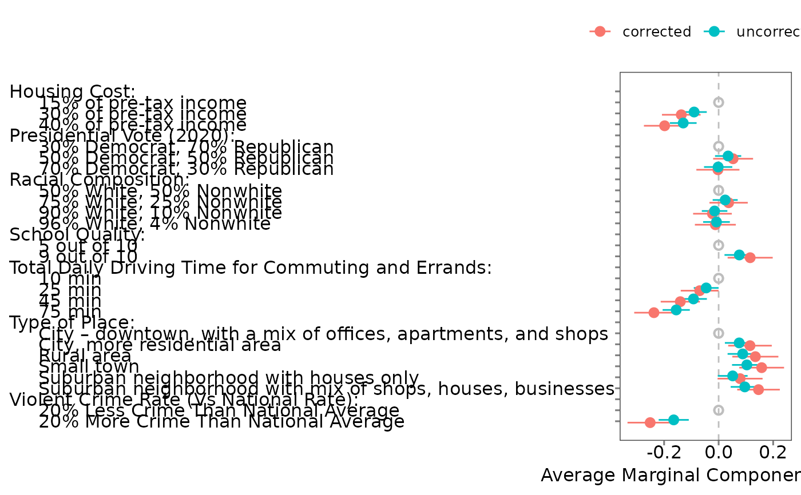

Computes marginal means (MMs) or average marginal component effects (AMCEs) with correction for intra-respondent reliability (IRR, \(\tau\)). When a repeated task is present, IRR is estimated unless a fixed value is supplied. Results are returned in a structured object ready for plotting and summary.
Usage
projoint(
.data,
.qoi = NULL,
.by_var = NULL,
.structure = "choice_level",
.estimand = "mm",
.se_method = "analytical",
.irr = NULL,
.remove_ties = TRUE,
.ignore_position = NULL,
.n_sims = NULL,
.n_boot = NULL,
.weights_1 = NULL,
.clusters_1 = NULL,
.se_type_1 = NULL,
.weights_2 = NULL,
.clusters_2 = NULL,
.se_type_2 = NULL,
.auto_cluster = TRUE,
.seed = NULL
)Arguments
- .data
A
projoint_datacreated byreshape_projointormake_projoint_data.- .qoi
Optional
projoint_qoidescribing the quantity of interest. If supplied, its fields override.structureand.estimand.- .by_var
Optional column name (character) for subgroup analysis; must be logical (TRUE/FALSE) or numeric/integer coded as 0/1. Only supported for
.structure == "profile_level"(ignored otherwise).- .structure
Either
"profile_level"or"choice_level"(default"choice_level"). Overridden by.qoi$structureif present.- .estimand
Either
"mm"(marginal mean) or"amce"(average marginal component effect). Default"mm". Overridden by.qoi$estimandif present.- .se_method
Standard-error method:
"analytical"(default),"simulation", or"bootstrap".- .irr
Numeric or
NULL. IfNULL(default), IRR is estimated (when design allows); otherwise a fixed IRR value is used and IRR estimation is skipped.- .remove_ties
Logical; remove ties in choice data before estimation? Default
TRUE.- .ignore_position
Logical; choice-level only. Ignore profile position (left/right)? Default
TRUE.- .n_sims
Integer; required when
.se_method = "simulation".- .n_boot
Integer; required when
.se_method = "bootstrap".- .weights_1, .clusters_1, .se_type_1
Passed to
lm_robustwhen estimating IRR.- .weights_2, .clusters_2, .se_type_2
Passed to
lm_robustwhen estimating MMs/AMCEs.- .auto_cluster
Logical. If
TRUE(default), automatically cluster on anidcolumn when present and no.clusters_*are supplied. Auto-clustering only occurs when the corresponding.se_type_*isNULL.- .seed
Optional integer. Sets a temporary RNG seed for reproducible simulation/bootstrap inside the call; restores the previous RNG state on exit.
Value
A projoint_results object (list-like) with components such as:
$estimand,$structure,$se_method,$irr,$tau$labels: attribute/level mapping used in estimation$estimates: a data frame of estimates with columns likeatt_level_choose,att_level_notchoose(if choice-level),estimate,se/std.error,conf.low,conf.high, and anestimandlabel such as"mm_corrected"or"amce_uncorrected".
This object is suitable for downstream use in plot.projoint_results,
summary.projoint_results, and related helpers.
Details
Most users will pass a projoint_data object (from
reshape_projoint or make_projoint_data). Advanced
users may specify custom quantities via projoint_qoi; if provided,
its structure and estimand override .structure and
.estimand.
Valid se_type_* values depend on clustering:
Without clusters:
"classical","HC0","HC1","HC2","HC3"With clusters:
"CR0","CR1","CR2","stata","none"
If NULL, estimatr defaults are used (HC2 when unclustered;
CR2 when clustered).
Examples
# \donttest{
# Prepare example data
data(exampleData1)
outcomes <- c(paste0("choice", 1:8), "choice1_repeated_flipped")
pj <- reshape_projoint(exampleData1, outcomes)
# Choice-level QoI based on pj$labels
att <- unique(pj$labels$attribute_id)[1]
lev_ids <- pj$labels$level_id[pj$labels$attribute_id == att]
lev_names <- sub(".*:", "", lev_ids)
q <- set_qoi(
.structure = "choice_level",
.estimand = "mm",
.att_choose = att,
.lev_choose = lev_names[2],
.att_notchoose = att,
.lev_notchoose = lev_names[1]
)
# Choice-level, marginal means (fast example: fix IRR)
fit_choice <- projoint(
pj,
.qoi = q,
.structure = "choice_level",
.estimand = "mm",
.irr = 0.80, # skip IRR estimation for a quick example
.se_method = "analytical"
)
head(summary(fit_choice))
#>
#> Summary of Projoint Estimates
#> ------------------------------
#> Estimand: mm
#> Structure: choice_level
#> Standard error method: analytical
#> SE type (lm_robust): CR2 (clustered by id)
#> IRR: Assumed (0.8)
#> Tau: 0.113
#>
#> # A tibble: 2 × 7
#> estimand estimate se conf.low conf.high att_level_choose
#> <chr> <dbl> <dbl> <dbl> <dbl> <chr>
#> 1 mm_uncorrected 0.432 0.0195 0.394 0.471 att1:level2
#> 2 mm_corrected 0.413 0.0251 0.363 0.462 att1:level2
#> # ℹ 1 more variable: att_level_notchoose <chr>
# Profile-level AMCEs
fit_profile <- projoint(
pj,
.structure = "profile_level",
.estimand = "amce",
.se_method = "analytical"
)
#> Warning: AMCE analytical SEs: CR2 produced non-PSD/NA variances; fell back to se_type='stata' (then HC1 if needed).
#> Warning: AMCE analytical SEs: CR2 produced non-PSD/NA variances; fell back to se_type='stata' (then HC1 if needed).
#> Warning: AMCE analytical SEs: CR2 produced non-PSD/NA variances; fell back to se_type='stata' (then HC1 if needed).
#> Warning: AMCE analytical SEs: CR2 produced non-PSD/NA variances; fell back to se_type='stata' (then HC1 if needed).
# Plot using the S3 plot method
p <- plot(fit_profile, .estimates = "both")
print(p)

# }